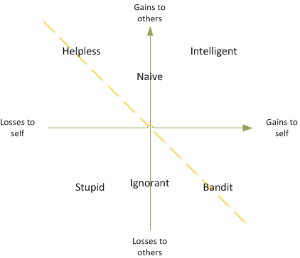

The Psychological Reasons for Software Project Failures
Disclaimer
This article is my PERSONAL OPINION about the state of affairs in the software engineering field. This is not intended to be a scientific paper so many statements are intentionally bold and direct to make the text short. I did my best to point the psychological reasons for software project failures based on my own observations and available sources, but I am not a professional psychologist nor statistician and I am PROBABLY TOTALLY WRONG. Additionally, I have no data to back these statements, so treat it with a dose of skepticism.
“Our real discoveries come from chaos, from
going to the place that looks wrong and stupid and foolish.”
―Chuck Palahniuk
A Never-Ending Tar Pit
Failure of software projects defined as a miss of deadlines, budget overrun, missed functionality and malfunction is prevalent in the software industry. A lot has been written about the reasons for this situation, blaming unrealistic project goals, inaccurate estimates of needed resources, badly defined requirements, poor reporting, unmanaged risks, poor communication, immature technology, sloppy development practices, poor project management, stakeholder politics or commercial pressure. Most of these put weight on the management side of the development process, properly identifying it as a cause of these failures. In my opinion, which is based on years of observation, there is another factor of this misery almost totally overlooked or intentionally omitted – programmers themselves.
I’ll use the term “programmer” throughout this text to denote not only software developers but also technical leads, architects and requirements/domain analysts, all of whom are responsible for the technical part of a software development process and are equally responsible for the success or failure of a software project.
“Smart” Programmers
The common belief among society in general and among programmer society as well is that “programmers are smart”, that they recruit from the most intelligent part of the society. I believe that this is based on a false assumption that programming a machine is difficult. I dare to disagree with this assumption as in reality, writing code is no more difficult than writing a proper culinary recipe (both being explicit instructions of how to make something). Computers are in their essence very simple machines based on basic mathematical concepts like variables, arithmetic, vectors, as well as some real-world concepts like conditional execution, repetition and delegation of work. These concepts are so basic that we either know them intuitively or are being taught about them at elementary schools. Programming does require a level of literacy, which excludes unsuitable individuals, but the claim that someone is “extra smart” because of being able to do what an average 12-year old is able to do, is a strong exaggeration. Since the distribution of human intelligence is given by bell curve, the intelligence distribution of programmers is given with the same bell curve with the left side of the diagram missing.
According to Wikipedia, a person who completes 1 to 3 years of college has an IQ of at least 104, which I suspect is the minimum for “Teach Yourself Java in 24h” type of programmers. This means that, following natural distribution, there is a considerable number of “average Joes” in the industry.
The Nature of Challenge
Coding is not a challenge. In fact, code is the last thing anybody is willing to pay for (though, ironically, it is the most important thing that gets produced in the end). The real challenge, and the real duty of a programmer, is solving problems that customers face, most likely with code but not necessarily. These problems are usually only partially “technical”, often sociological, often complex, often wicked. As problem complexity grows, the required effort, intelligence, knowledge, and dedication to solve it grow as well, sometimes exponentially. Recognizing complexity, confining it and minimizing it is the ultimate goal of a programmer. This raises the bar so high that an average person might fail to present the sufficient personal qualities required for the job, and turn out to be relatively stupid.
As David Parnas states: “I have heard people proudly claim that they have built lots of large complex systems. I try to remind them that the job could have been done by a small simple system if they had spent more time on "front-end" design. Large size and complexity should not be viewed as a goal.”
The 4 + 2 Model
It is necessary to unambiguously define stupidity in the context of programming.
“A stupid programmer is the one that puts complexity to a software product that negatively impacts other programmers, customers or a whole company while achieving no gain from this fact and even possibly negatively impacting oneself”.
By putting complexity, I mean either failing to reduce the inherent complexity of the problem being solved with software, by using so-called “brute force” solutions or actually introducing of accidental (usually technical) complexity, that could be avoided if more thought and care was given to the solution.
By negative impact, I understand the increased workload, reduced efficiency, and higher cost.
Following Carlo M. Cipolla’s work, programmers can be divided into four categories: Intelligent, Bandits, Helpless and Stupid with two additional categories of Naive and Ignorant. It is important to keep in mind that the presented model is dynamic and each person tends to migrate between categories depending on various internal and external factors but it seems that mature programmers tend to stick to one category most of the time.

An Intelligent programmer is able to formulate the problem and a solution in such a way that the resulting complexity is lowered for both his chunk of work and other peoples’ chunks of work. An example would be a software module with streamlined, coherent functionality and a well-defined interface that is easy to implement, test and integrate with. By putting thought into a broader scope of the problem being solved, the intelligent programmer is able to achieve a net positive effect for both himself and a part/whole organization as well as customers. These programmers are usually called “10x programmers” as they can outperform entire teams just by themselves.
A Bandit programmer, on the other hand, is mainly concentrated on his own task. His priority is to optimize his own performance at the cost of others. Such a programmer usually does not attack the problem itself, but rather fights to limit the scope of his assignment (to reduce his workload or to gain more time), impacting other peoples’ assignments. Additionally such programmer sacrifices code qualities like flexibility, performance, testability, which pay in the long run, for short term gains oriented toward management recognition. Such a person usually looks at the entire product from a selfish perspective. The net effect of their action may be positive or negative depending on whether the individual leans toward Intelligent or Stupid. Additionally, such people often display a lot of over-confidence and facade professionalism to support their unearned position in organizations (exposing a hot or cold arrogance). These people are usually called “cowboy coders”.
A Helpless programmer is the one that is generally dedicated to the success of the company and praises teamwork over individualism. Being generally of the same intelligence as Bandits but with opposite goal orientation, he does his best to support the organization at the cost of his own time and performance. He tends to compromise his own designs and code quality, by introducing complexity he might actually avoid, in order to make things “easier for others”, even though it might incur more problems on him. He tends to fix other peoples’ code without compensation, work unpaid overtime, or contribute in their free time. He is usually willing to educate others in the hope to benefit them or the entire organization. The net effect of these actions depends on whether the individual leans toward Intelligent or Stupid. Such people usually keep a low profile in the organization. They may be recognized for their inputs by direct managers but because of their negative performance reviews, caused by the avoidable complexity they willingly introduced, they are seldom rewarded for their efforts.
A Stupid programmer is the worst kind ever encountered. It is a person who generally has no idea what he is doing, often lacking any skills required in programming except familiarity with programing language. Such a person is generally unable to provide anything but stopgaps that barely solve the problem being addressed. Usually, the number of defects exceeds the number of implemented features, the code is difficult or even impossible to test and it causes negative ripple effects throughout the entire organization. The low (or lack of) quality of his work impacts negatively both the organization and himself, as he often spends long hours of unpaid overtime to solve problems he has put himself into. Such people usually occupy some corners of the organization keeping a low profile, out of sight of management. They never advance and are generally happy to have a job. Stupid programmers, as well as Ignorant programmers, get attracted to the industry by salaries only. These programmers are sometimes called “1/10 programmers” as they can bring the performance of entire teams to its knees. They are generally not very abundant as they get recognized eventually, but the harm they do is disproportional to their numbers.
Additional two types of individuals are Naive and Ignorant.
A Naive programmer is the one that concentrates on his work without paying any interest to a broad picture. A naive programmer puts decent quality into his work but generally is not interested in anything beyond his assignment. He is invisible from an organizational perspective. He tends to work 9-to-5 precisely and rarely advances. He exposes a factory line worker mindset and is easy to manage, but without proper management, his performance may stall to halt if his position on the vertical axis is close to zero.
The last category comprises Ignorant programmers. An Ignorant programmer’s most distinct trait is the “I don’t care”. He expresses absolutely no interest in what he does. He provides only enough quality not to get fired, without any consideration of other people’s assignment or organization goals. He is usually uncooperative and unresponsive to his workmates causing organization-wide negative effects. On the other hand, he may cause disruption by demanding assistance from other organization members. He exposes factory-line-worker mentality considering himself a kind of “organic compiler” who is supposed to convert a set of artifacts into code without engaging much intellectual effort. He insists more on development process compliance than on actual work done. His attitude toward defects is usually “I’ll fix it in the next sprint.”. He can be managed, but despite management effort, he may not able to produce value that even compensates his salary. He may expose tepid arrogance. I personally believe that this category is most common.
Intelligence and dedication are just part of the picture which will be shown in full in the following paragraphs.
Barbarians at the Gates
According to the following article, the number of programmers in the world doubles every five years. If we boldly assume that 10 years of experience lets one become professional and that the average person works for 40 years, this means that only one-fourth of the programmer population is experienced enough to actually carry out the work properly. This number is frightening in comparison to more stable disciplines where one can expect 3 out of 4 people to be seasoned professionals and only one of them to be an apprentice. To make things worse, I dare to challenge this even further.
Misery of Education
At first, I’d like to challenge the statement that a Computer Science degree holds considerable value. The exponential growth of programmers implies exponential demand for Computer Science teachers, and this implies that the ratio of experienced Computer Science teachers to novices is again 1 to 3. This means that most Computer Science students are being taught by people not much older, who usually have no practical experience at all (usually Ph.D. students). I suspect that such teaching seldom goes beyond “follow the book”. The effect is that a CS graduate is capable of writing code and not much beyond that, as there was no one to teach him what Software Engineering actually means. Of course, this is true only under the assumption that the number of students per teacher stays the same over years (otherwise, the quality of education drops even more rapidly).
The Endless Sea of Ignorance
Another important fact is the mismatch between what is being taught at universities and what industry demands. Many universities teach Computer Science whereas industry demands Software Engineering skills. The problem is that engineering skills are often impossible to teach, and they can only be learned “by doing”. This means, that in order to become a professional in Software Engineering, one needs to spend the first 10 years of his career experimenting, failing, learning from it and studying on his own. This requires genuine interest, dedication and some kind of passion. It makes sense to assume that the distribution of these qualities among graduates follows the bell curve. If so then only about 20% of graduates spend the first 10 years of their career on deliberate learning, 60% will acquire some knowledge along the way, and 20% will learn close to nothing. This means that after 10 years, only 20% of programmers become true professionals in Software Engineering. This forms an even more terrifying view of the industry there the number of true professionals is only 5%. If we assume that the number Bandits, Helpless and Naïve among them is 50%, then the number of so-called “x10 programmers” is about 2.5%.
The Fallacy of the Bell Curve
The number of 2.5% harmonizes with the bell curve distribution where the number of values more distant than a double standard deviation from the mean accounts for to 2.1%, but assuming that the distribution of competence of programmer is given by standard bell curve (as can be assumed in any stable engineering field) is false. Considering that three-thirds of the population is more or less inexperienced and that professionalism of 50% of the rest is below average, the actual distribution of competence among programmers is heavily biased towards incompetence (see Figure 2.)
The Great Misunderstanding
Programmers are technology-oriented. They get attracted to computing because of their technological bias. Their job though is not to write code as they often think, their job is not even creating software. Their job is to solve customers’ problems and software is just one of the means to do it. Sadly, seldom do they manage to understand this.
Solving customers’ problems requires much more beyond writing code. It mainly requires acquiring domain knowledge in order to be able to even communicate with the customer. It requires diving into the world of the customer to be able to understand his needs. A programmer familiar with a particular domain is not only able to code but actually to create solutions. Otherwise, he is blind. A programmer who is a domain expert is way more efficient as he can answer many more questions himself. Most programmers are ignorant of the domain. They have no interest in it. They deliberately reduce themselves to “organic compilers” because it is easier. They do not understand that the company and themselves pay the price for that.
Nerd Culture
Programmers often recruit from the nerdy part of the student population, who present deficiencies in social skills. As Gerald M. Weinberg described it “Social psychologists tell us that there are different personality types […]. Among general personality traits is one which is measured along three ‘dimensions’ – whether a person is ‘compliant’, ‘aggressive’ or ‘detached’. The compliant type is characterized by the attitude of liking to ‘work with people and be helpful’. The aggressive type wants to ‘earn money and prestige’ and the detached type wants to ‘be left to myself and be creative’.
Now, every person contains a mixture of these attributes, but most people lean more heavily in one direction than the others. There is no doubt that the majority of people in programming today lean in the ‘detached’ direction, both by personal choice and because hiring policies for programmers are often directed toward finding such people.”
Many programmers-to-be choose to interact with computers instead of people because in this relation they are the ones who give orders, and computers generally don’t oppose (except when the code doesn’t compile but this is impersonal). They are those bullied skinny boys who finally found someone they can control and dominate. They stay the same nerds as time passes, just older.
As Mr. Weinberg states: “one of the most easily identifiable personality needs in programmers is a modicum of ‘neatness’ as a slight compulsion to keep one’s papers in order […]. Another essential factor is […] a small dose of ‘humility’ to prevent ‘the programmer learning a few simple techniques, feeling that he is an expert, and then being crushed by the irresistible power of the computer’ […]. The other side of the coin of humility is ‘assertiveness’, or force of character. A programmer’s job is to get things done, and getting things done sometimes requires moving around obstacles, jumping over them, or simply knocking them down.”
Throughout my career, I found out that most of these obstacles are not technical but social in nature. They require challenging other people, forcing them out of their comfort zone and saying “NO!” to managers, in other words, it requires courage. Many programmers don’t know how to deal with conflict so they prefer to avoid it (Naive and Helpless) adding their part to the ultimate failure.
Confidence of Ignorants
Despite my previous estimation of a number of non-professionals in the industry, I do not see a massive decline in the numbers of programmers. I don’t encounter a large number of programmers changing careers every year just because they have realized that they are not a good fit for programming. I believe that the reason for this (besides paycheck of course) is the Dunning-Kruger effect which “is a cognitive bias in which people of low ability have illusory superiority and mistakenly assess their cognitive ability as greater than it is. The cognitive bias of illusory superiority comes from the inability of low-ability people to recognize their lack of ability. Without the self-awareness of metacognition, low-ability people cannot objectively evaluate their competence or incompetence”. In other words, unprofessional programmers are not able to recognize their lack of professionalism, because they have no idea what constitutes it. They present unconscious incompetence. Additionally, they are unable to adequately judge their unprofessional peers. This means, that since true professionals are scarce, there are plenty of teams out there exclusively consisting of unprofessional programmers having a high opinion about themselves, just because there is nobody on the team able to recognize their low rank. I don’t dare to make an explicit statement here, but I suspect that this effect is most prevalent among the Ignorant and Stupid.
Impotence of Leaders
On the other scale of the competence sits another filthy beast called impostor syndrome. This psychological phenomenon concerns gifted individuals who achieved the highest level - an unconscious competence. It “is a psychological pattern in which an individual doubts their accomplishments and has a persistent internalized fear of being exposed as a ‘fraud’. Despite external evidence of their competence, those experiencing this phenomenon remain convinced that they are frauds, and do not deserve all they have achieved. Individuals with impostorism incorrectly attribute their success to luck, or as a result of deceiving others into thinking they are more intelligent than they perceive themselves to be”. This means, that a part of top professionals out there (20% if we assume a normal distribution) fail to become technical leaders just because they don’t think they are professionals. These people assume that problems they successfully solve are so simple that anybody could do it, including the incompetent. They fail to recognize the incompetence of their peers or fail to disclose it, conserving the status quo, which in the end impacts them. I suspect that this phenomenon concerns mainly the Helpless and Naive, as well as some Intelligent that lean towards helplessness.
Guilt Driven Development
It is commonly known that programmers are over-optimistic about the complexity of problems they are dealing with. In fact, unrealistic project goals, usually in terms of schedule, are among the most common project failures. Many try to answer the question of how to improve programmers’ estimation abilities. I, on the other hand, try to attack the “why”. The first reason why programmers overpromise is the lack of full understanding of the problem at the time they are asked to provide estimates. As David Parnas states: “People tend to underestimate the difficulty of the task. Overconfidence explains most of the poor software that I see. Doing it right is hard work. Shortcuts lead you in the wrong direction and they often lead to disaster.” This is a totally valid reason, but in my opinion, there is a psychological reason as well. It’s guilt.
Everybody fails to deliver. Amateurs fail 8 times out of 10. Professionals fail 2 times out of 10. Programmers inevitably fail to deliver at the beginning of their careers. Failure causes a feeling of guilt and that is the beginning of the vicious circle which works as follows:
- A programmer makes an optimistic promise to management.
- A programmer fails to deliver up to the promise.
- A programmer makes another overoptimistic promise in order to compensate for his previous failure.
- He fails again and the cycle repeats.
If nothing gets improved, the cycle can repeat throughout the entire programmer’s career. This is where the Stupid and Helpless end up (though because of different reasons). This is what causes a lack of trust. This is what causes micromanagement.
There are two ways to escape from this situation. First is self-improvement. Once skills grow, tasks become easier and more predictable. One also learns to better anticipate potential obstacles that might appear along the way. This is how the Intelligent deal with it. The second is risk mitigation by underpromising, when estimates grow far way beyond what is actually required to perform the task. This is what Bandits and Ignorants end up with. This is what causes stagnation, as every progress gets seen as prohibitively expensive.
The Inevitable Failure of Agile
Agile software development is the established way of doing software these days, but it turns out it does not hold its promise very well. I’m convinced that this is because agile software development has a chance to function only when it is performed by competent, intelligent and courageous programmers genuinely interested in customer’ domain. The Manifesto for Agile Software Development states it explicitly listing its principles :
- “Business people and developers must work together daily throughout the project.” – requires customer’s domain interest;
- “Build projects around motivated individuals. Give them the environment and support their needs, and trust them to get the job done.” – requires motivation, and passion;
- “Continuous attention to technical excellence and good design enhances agility.” – requires competence and intelligence;
- “Simplicity--the art of maximizing the amount of work not done--is essential.” – requires competence and intelligence as well;
- “The best architectures, requirements, and designs emerge from self-organizing teams.” – requires competence, intelligence, and courage.
The failure of agile software development is inevitable. Assuming that the amount of Intelligent programmers in the industry is about 2.5% (1/40), and the maximum size of a SCRUM team is 9 people, the probability that the average SCRUM team consists of at least one Intelligent is less than 25%. If the team consists only of Helpless, Naive, Bandits, Ignorant and Stupid the effect is rarely positive.
Facing the failure of agile software development, companies go back to the waterfall model, which is the only way to achieve anything with programmers of “factory line worker” mentality. Alternatively, they pretend “being agile” with a waterfall process on top. Both are at the cost of huge process overhead that can often bring a project down. What companies fail to recognize is that you cannot substitute talent, knowledge, intelligence, dedication, and care with the process. This is a lose-lose situation, as no process can actually be applied successfully because it is impossible to manage bad programmers to succeed.
A Bitter Pill
I found this enlightening quote from David Parnas:
The most often-overlooked risk in software engineering is ‘incompetent programmers’. There are estimates that the number of programmers needed in the U.S. exceeds 200,000. This is entirely misleading. It is not a quantity problem; we have a quality problem. One bad programmer can easily create two new jobs a year. Hiring more bad programmers will just increase our perceived need for them. If we had more good programmers, and could easily identify them, we would need fewer, not more.”
If the project is late, it is better to fire bad programmers than to hire more of them. At least, they will not get in the way of good ones.
Not firing programmers is a major problem as there is no sense of accountability in the industry. Actors get fired after every movie, so they feel pressure to perform well every time. Programmers, with artificially created demand, feel no pressure to exhibit high performance every time as they can switch jobs before things go bad (their incompetence gets discovered). This fosters more incompetence and stupidity.
The Thirteenth Principle
Following the 12 principles of Agile, I’d add another one: “Do not employ Stupid programmers.”
Do not deal with programmers below the diagonal dashed line in Figure 2, as they produce a negative net value and will inevitably bring the software project down. Identify and fire them. The best performing mix consists of the Intelligent leading the Naive and Helpless, which may be a few Intelligent-Bandits if you can hold them tight (provided that they have some valuable abilities that outweigh the cost of micromanaging them - like graphics design, hardware design, intimate domain knowledge, etc.). Additionally, beware of too many Helpless as their helplessness will hit you eventually.
A New Hope
The above text may suggest that I’m the superior programmer with an inflated ego trying to judge the less fortunate peers, but this is not the case. I hope that this text puts some light on reasons for software project failures that, in my opinion, haven’t been investigated enough. I hope that it helps developers to orient themselves within the multidimensional space I have described and find their way of improvement. I hope it helps managers to identify deficiencies of their team an implement appropriate corrective actions. It definitely helped me to understand things better, to find a bit more order in the surrounding chaos, and I hope it serves its purpose for every reader as well.
Appendix A. Blame it on the dog
As I have written in the first chapter, poor management has its fair share in software project failures, but blaming only managers, despite being fashionable, misses the other part of equation. To better understand the problem let’s assume that a manager gets assigned a new project and a team to carry it (which is wrong by itself as managers should form their teams themselves) and consider four possibilities.
If both manager and the team members are competent the probability of successful project outcome is very high (they will try to do all the right things to make it successful).
If both manager and the team members are incompetent the project is doomed before it even starts (this requires no explanation).
If the manager is incompetent but the team members are competent, the success of the project depends strongly on people’s will and ability to bypass and substitute the incompetent manager. The team needs to self-elect a “shadow manager” who gets the manager’s job done at the cost of decreased team’s productivity. If the manager himself is happy to “abdicate” from his function (and become just a façade), then the project may succeed, otherwise high employee turnover and project failure shall be expected.
The last possibility is a competent manager bundled with an incompetent team. In this case the project success cannot be expected, as even the best plan will not be executed correctly and timely by assigned individuals. Defects, mistakes, workarounds and schedule slippages will pile up leading to a disaster at the end. In this situation a competent and foreseeing manager has three choices:
- he can escalate the problem to upper management and vote to cancel the project before the expense is made (this requires courage and good analytical skills);
- he can dismiss the team and start a new recruitment process at an additional expense (this requires even more courage as it requires challenging people face-to-face);
- he can leave the project or the company and then get blamed by his successor and the team when inevitable disaster finally happens (which is probably the best career move anyway).
In summary it is important to remember that even the best jockey cannot win a race riding a dead horse, and providing him with more dead horses does not rise his chances ;-)
Appendix B. Is being a Bandit Programmer the best strategy?
WARNING: This chapter is highly speculative.
Societies are based on the notion of reciprocity. As members of society exchange goods and services among one another the debt records are kept “in memory”. This is more efficient and flexible than regular transactions, and increases the interpersonal bonds between the society members. In fact without reciprocity the group of people can’t even form a society and instead just forms a crowd of independent hermits. The same mechanism applies to employment relations as companies are kind of societies themselves. Even though the actual contract is signed and payments are processed the actual scope, quality and timing of both work and pay are often fluid to a large extent and a lot of cooperation is based on mutual trust.
In a functioning society the best long term strategy for survival is to follow the rules, cooperate and be reciprocal. On the other hand the best short term strategy is to extract as much value from as many other members of the society as possible and never give anything back. The strategy works because in reciprocal societies each member is given a credit of trust which. This enables and simples mutually beneficial interactions between members. The short term strategy can be very effective until the crook gets a bad fame and becomes ostracized outsider, unless … the crook can easily migrate to new societies. High demand for programmers and lack of formal certifications combined with common anonymity make such migrations between companies (societies) extremely easy. A crook (bandit-programmer) can exploit a company by collecting paycheck and building his professional portfolio without giving almost anything back (giving just enough to stay under radar by manipulating performance indicators) and in the right moment (usually just before being detected) move along to another company (usually with pay rise and promotion). In such situation the best short term strategy becomes the best long term strategy if applied repeatedly.
Personally I can think of three reasons why people become Bandit Programmers though there are probably more.
First – some people are natural born crooks suffering from antisocial personality disorder. Such people generally consider other people as resources which can be exploited as necessary. I assume that the number of such people in the profession is low as other professions are more suitable for them (like direct marketing or politics), but still can be met. The same pattern of behavior can be presented by people with narcissistic personality disorder, whose main motivation is crave for admiration (I’d call them “celebrity programmers”), but I believe they are even less frequent than antisocial types.
The second reasons why people become Bandit Programmers is laziness. Some people present very little conscientiousness and are simply not willing to work honestly. Such people tend to generate a lot of informational noise, attend lots of meetings and generally occupy themselves with anything but productive works (usually holding titles like “enterprise architect” or “product strategy coordinator”). This lets them make a living on illusion of productivity until hard reality verifies it, but then they a usually already gone.
The third reason (and probably the most heartbreaking) to become Bandit Programmer is when the company fails to satisfy the inherent needs of intelligent programmers. This usually happens in companies operating in in (astonishingly abundant) "Routine" pattern, described by Gerald M. Weinberg hyper-concentrated on process, cultivating a myth of "superhero manager", and always looking for silver bullets, which do not understand the specifics of software development. In such situations the best strategy for an Intelligent Programmer is to leave but sometimes other factors force people to stay. When this happens a programmer naturally seeks balance between what he gives and what receives by minimizing effort. Of source this produces the feelings of shame and guilt which one needs to cope with. The most straightforward rationalization applied to cope with guilt and shame is the following: “Yes, I’m collecting paycheck for nothing, but this company is so stupid that it deserves to be looted” or “Yes, I’m collecting paycheck for nothing, but so do many others”. From now on bitterness and cynicism follows and the distrust between business and programmers prevails solidifying the prevailing “Routine” pattern throughout the industry.